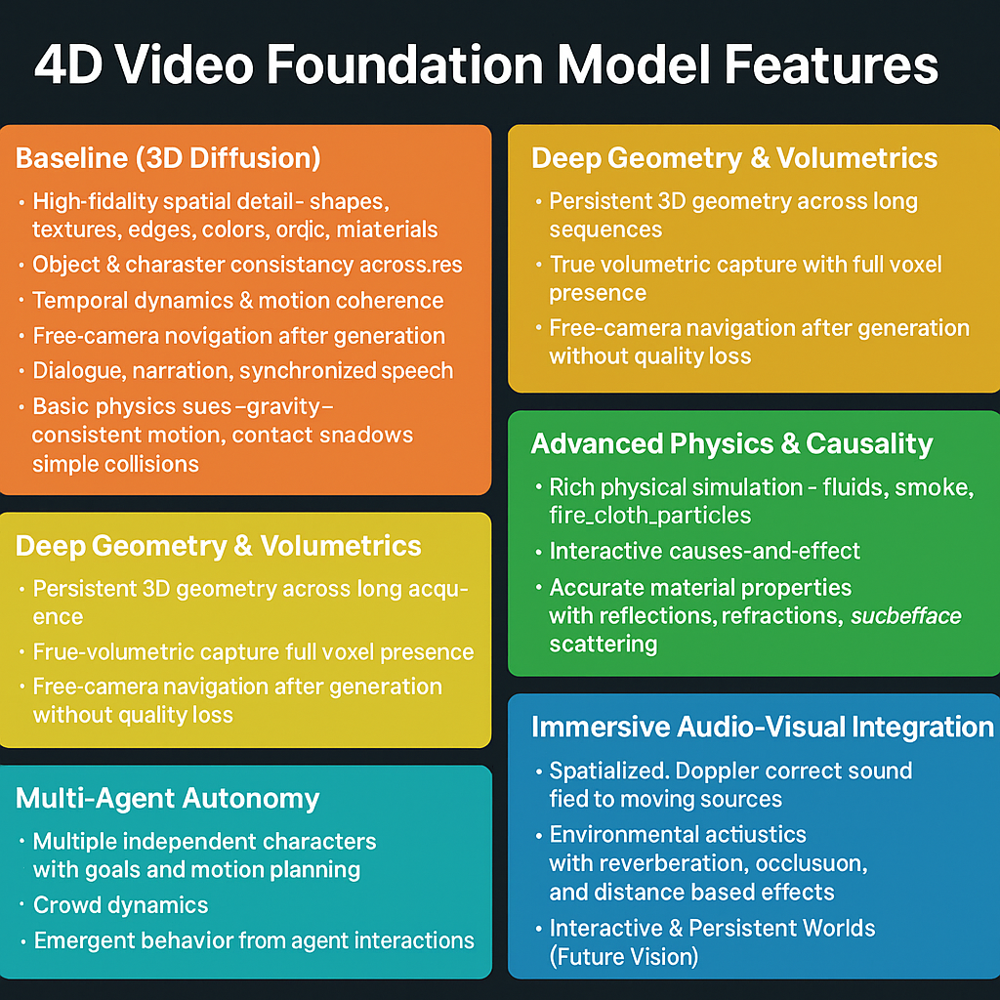

What is the video modality?
⸻
Defining a Large Video Model (LVM)
A Large Video Model is a foundation-scale neural system trained end-to-end to understand, generate, and transform high-dimensional video data.
It treats video as a 4-dimensional signal—three spatial dimensions plus time—and integrates audio and other sensor streams as first-class citizens.
Core Characteristics
- Scale & Training Paradigm
📈 Foundation-level size: Hundreds of billions of parameters or equivalent compute, trained on multi-million-hour datasets. 🌍 Diverse, real-world footage: Wide coverage of lighting, motion, and acoustic environments. 🔁 Self-supervision: Predictive or masked-frame objectives rather than narrow task labels.
- True 4-D Representation
🧩 Spatiotemporal coherence: Joint modeling of geometry (3-D) and temporal dynamics (time). 🔊 Audio-visual fusion: Native coupling of sound propagation with scene evolution for realistic echoes, occlusions, and Doppler effects. 🌐 Volumetric reasoning: Internal latent space captures scene depth, camera motion, and object permanence.
- Unified Generation & Understanding
🎬 Video-to-Video & Video-to-World: Predict future frames, generate novel shots, or reconstruct 3-D environments from video alone. 🖥️ Cross-modal control: Text prompts, sketches, or 3-D CAD input can guide output without breaking temporal consistency. 🔍 Rich perception: Action recognition, physical reasoning, and causal inference baked into the same model that can generate.
- Architectural Hallmarks
🕸️ Long-range temporal attention or hierarchical transformers handling thousands of frames. 💨 Efficient diffusion or autoregressive modules for high-fidelity frame synthesis. 🧮 Differentiable physics layers (optional but expected) to encode motion and sound propagation.
- Capabilities Benchmarks
🎥 Hour-long scene continuity with no flicker or drift. 🗣️ Perfect lip-sync and environmental acoustics. 🏙️ Free-camera navigation after generation—true volumetric capture.
Defining 4-Dimensional (4-D) Video Generation
4-D video generation is the ability of a model to create fully coherent audiovisual scenes that are consistent across x, y, z (depth) and t (time), capturing not only appearance but physics, sound propagation, and camera freedom.
🟦 1. Spatial Fidelity (3-D Geometry)
Volumetric Scene Modeling – Each frame is not a flat image but a slice of a continuous 3-D field (NeRF-like or point-cloud latent). True Depth & Parallax – Camera movement reveals hidden surfaces with correct occlusion and lighting. Material Properties – Surfaces carry reflectance, translucency, and texture parameters for physically correct rendering.
🟩 2. Temporal Coherence (Time Dimension)
Frame-to-Frame Consistency – No flicker, morphing, or object drift over minutes or hours. Dynamic Object Persistence – Identities and internal states persist (clothing wrinkles, hair motion, weather evolution). Physics-Aware Motion – Gravity, collisions, fluid dynamics follow conservation laws.
🟧 3. Audio–Visual Integration
Sound Propagation – Automatic modeling of echoes, reverb, Doppler effects linked to 3-D geometry. Source Tracking – Voices or effects remain spatially anchored as actors and microphones move. Cross-modal Generation – Text-to-video prompts produce perfectly lip-synced dialogue and environment-matched ambience.
🟥 4. Camera Freedom & Viewpoint Control
Free-Camera Navigation – After generation, users can move a virtual camera anywhere and reveal new perspectives without rerendering. Continuous Zoom & Reframing – Infinite-in/zoom-out with correct parallax and lighting adaptation.
🟪 5. Long-Range Memory & Narrative Control
Scene Continuity – Maintain narrative threads and environment state over hours or even days of generated footage. Causal Storytelling – Characters remember past events; objects stay where they were left.
🟫 6. Interactive & Editable World
Real-Time Edits – Insert or remove objects, change weather, alter lighting while the system regenerates all dependent frames and audio. Simulation Hooks – Physics or game-engine APIs allow live interaction with generated worlds.
✅ Key Architectural Needs
Hierarchical spatiotemporal transformers or diffusion models with thousands of frames of attention. Integrated differentiable physics layers for motion and acoustics. Cross-modal latent spaces that natively encode geometry + time + sound.
Why It’s Distinct from Other Models
Not just “video-enabled LLMs.” Those reason over transcripts or short clips but don’t generate full 4-D worlds. Beyond 3-D diffusion: adds continuous time and audio-visual physics as primary modeling targets. Foundation scope: general-purpose for video creation, prediction, and simulation—comparable in ambition to LLMs for text.
Video is not simply a sequence of images — it is a fused spatiotemporal modality that combines:
⸻
Vision (space) — per-frame spatial detail (objects, texture,colors,lighting). Time (motion) — frame-to-frame dynamics, causality, and temporal dependencies. Audio (sound) — speech, music, ambient noise, and prosody tightly synchronized with visuals.

🎥 DNI for Video Generation
Where frontier models are headed — post-Sora, post-Veo, toward “Veo-6-tier” systems with deep architectural and narrative coherence.
📍 Overview
The future of video generation models will not be text-to-clip toys — it will be cinematically and causally intelligent simulators, trained on all video ever digitized, with episodic memory, character awareness, and compositional temporal planning.
⸻
🧠 Foundational Realization
Video is not multimodal — it is one fused modality of temporally synchronized visual, auditory, and linguistic cues.
Generation must respect this entanglement — not merely align them post-hoc.
⸻
📦 Training Substrate: “All Video Ever Digitized”
Sources:
• YouTube (diverse content: narrative, instruction, humor, vlogs, livestreams)
• Movies + TV (camera work, plot arcs, acting, lighting continuity)
• TikToks / Reels / Shorts (compressed high-intensity sequences)
• Podcasts + Video essays (complex verbal threads + minimal visuals)
• CCTV / Surveillance (causal body dynamics, passive events)
• Video Game Cutscenes (semi-synthetic emotional simulations)
Purpose:
• Learn realistic event progression, multi-agent choreography, emotional synchrony, dialog flow, lighting coherence, sound timing, spatial reasoning.
⸻
1️⃣ Core Evolution
Add new bullets as sub-points under what future video models will achieve:
• Physics- and Causality-Aware Rendering;
• Embedding differentiable physics engines or learned dynamics models into the generation pipeline.
• Ensures objects behave plausibly in motion: collisions, gravity, fluid dynamics, and material responses.
• Reduces visual artifacts like “floating objects” or impossible interactions, making simulations physically and visually coherent.
• 🌈 Style and aesthetic consistency: Ensures that across episodes, visual style, lighting, and color grading remain coherent.
From:
• Prompt-to-clip (5–15s, generic, low continuity)like current video generation models
To:
• Prompt-to-episode (5–40 min), with:
• 🎭 Character persistence (appearance, voice, emotion)
• 🧠 Episodic memory (across scenes, arcs, spatial layouts)
• 💬 Narrative & dialogue continuity (interactions with purpose)
• 📽️ Scene-to-scene visual and lighting continuity
• 🎧 Synchronized audio: dialog, ambiance, and music
• 🧠 Emotionally & contextually aware character behavior,dialogue and development
• 🕹️ Multi-character interactions with goal-oriented actions
• Temporally coherent music, voice, and expression
⸻
🧠 Architectural Backbone
- MoE / MHLA-style Routing for Video
• Frame-wise & segment-wise expert routing
• Adaptive routing across:
• Visual streams
• Temporal events
• Audio (speech, music, ambient)
• Memory states
• Enables scaling depth and temporal length
• Dynamic temporal routing for long-form narrative coherence across scenes.
• Multi-agent routing to prioritize interactions or key characters at runtime.
⸻
- Episodic Sequential Memory Layers
• Tracks scenes, locations, character states, emotional arcs
• Allows:
• Long-range scene planning
• Context carryover between episodes
• Realistic multi-character plots
Longform memory stores:
• Scene goals
• Agent states
• Visual themes
• Narrative beats
• Scene-object causal memory: Track interactions of objects over time.
• Hierarchical memory: Memory blocks for scene, sequence, episode, and season-level context.
• Episodic memory scales with scene length; add hierarchical scene abstractions to compress long sequences.
• Lets the model plan and recall across hours of content without exceeding compute budgets. ⸻
- Conditioned Multi-Agent Behavior
• Characters with:
• Believable facial expression & body movement
• Persistent speech & goals
• Group dialogue logic and social dynamics
• Core for:
• Dramas, sitcoms, education modules, story-driven games
⸻
- Temporal & Spatial Consistency Layers
• Stabilizes:
• Lighting
• Scene geometry
• Environmental physics
• Prevents:
• Jitter
• Style drift
• Temporal dislocation
Character Identity + Group Dynamics Module
• Character tracking across time and scenes
• Maintains:
• Face, voice, gesture style
• Interpersonal goals + emotions
• Physical positioning + attention
• Temporal & Spatial Consistency Layers:
• Advanced jitter correction for subtle motion artifacts.
• Lighting adaptation for multiple simultaneous light sources.
• Emotion and Behavior Modeling
• Advanced multi-agent systems with emotionally consistent characters.
• Predicts and generates facial expressions, body language, and tone that match internal goals and context.
• Integrates with episodic memory for long-term personality persistence.
🎬 • Adaptive cinematic control: AI automatically adjusts camera angles, shot composition, and pacing to match narrative tone. 🧩 •Physics-aware scene generation: Objects, characters, and effects behave according to realistic physics rules, enabling accurate simulations.
⸻ ⸻
- Temporal-Spatial Style Consistency Layers
• Prevents:
• Flicker
• Expression collapse
• Background drift
• Lighting mismatches
• Dialogue–emotion desync
⸻ ⸻
🚀 Implications (Why It Matters)
When this tier of DNI for video arrives:
• 95% of animation, cutscene, explainer, and short film pipelines collapse into prompt–edit–review cycles
• Entire creative industries shift to co-piloting agents with specialized episodic memory
• Education, simulation, storytelling, and marketing are transformed
• “Show, don’t tell” becomes trivial at production scale

⸻
🧭 Example Applications
• 🎮 Video game previsualization with consistent characters and world logic
• 🧪 Scientific simulation visualization in real-time (e.g. cell processes, climate)
• 🎓 Custom very accurate educational videos generated from lesson plans
• 📺 Personalized shows for children, tuned to learning goals and preferences
• 🎥 AI copilot for YouTubers, filmmakers, animators able to generate entire proprietary videos across all
• 🎮 Interactive video will become a reality, enabling advanced AI generated AAA-style hub worlds featuring dynamic characters, persistent memory, real-time environmental changes, and branching narratives — all generated through natural language prompts and evolved over time with consistency(which we see VERY minuscule, weak version of with genie 3)
• 🎮 gaming companions that play video games with you or take over playing when you ask it to and communicates in real time via text prompt or possibly voice Example Applications
🏗️ Interactive scientific simulations: Real-time, multi-step experiment visualization with causal event prediction.
🎮 AI-driven storyworlds: Dynamic branching plots with persistent characters and evolving world states.
🎞️ Automated cinematic editing: AI chooses the best camera angles, cuts, and transitions for a narrative, given only a high-level script.
👥 Adaptive multiplayer interactions: AI agents simulate player-like behavior, responding to real human players with consistent logic and memory.
⸻
🧩 Autonomy Blocks & Memory in Video Generation
Why it matters:
To move beyond reactive video synthesis into proactive cinematic simulation, video models need internal autonomy structures and long-term memory. These modules enable characters, environments, and narratives to act coherently without micromanagement from the prompt.
Core Components:
• Autonomy Blocks
• Self-propagating agents with internal goals, emotional states, and behavior loops.
• Characters can act, react, and pursue objectives across frames/scenes.
• Prevents “dead characters” syndrome where agents freeze without explicit direction.
• Narrative Memory
• Episodic storage of plot beats, locations, and emotional arcs.
• Recall of prior interactions (e.g., a character remembering a promise or conflict).
• Enables causality, tension, and payoff across scenes.
• Environmental Memory
• Persistence of props, weather, lighting, and spatial layouts.
• Prevents scene resets or inconsistencies (e.g., coffee cup disappearing).
• Supports continuity across episodes in a generated series.
Implications:
• Characters evolve across time, making generated shows or films “watchable” rather than novelty.
• Multi-agent dynamics feel like ensemble cast storytelling.
• Episodic series and branching narratives become possible without constant prompt-engineering.
• Enables interactive worlds where users return and find characters who “remember them.”
⸻
One of the most fascinating developments in multimodal AI is the recent Genie 3 model, which aims to model complex, real-world video data. Unlike typical multimodal models that handle both images and text, Genie 3 specializes purely in video — capturing the dynamic, temporal flow of the world.
A helpful way to conceptualize Genie 3’s architecture is to think of it like a LEGO system, where multiple pretrained “bricks” or components snap together under a blueprint that orchestrates the entire process. Here’s a breakdown of its modular pieces:
Real-Time Interactive Video Generation
⸻ 🧩 Autonomy Blocks & Memory in Video Generation (Architectural View)
- Autonomy Blocks (Agent Sub-networks)
Architecture: • Small transformer-based “policy heads” attached to main video backbone. • Each agent block takes as input: • Current latent state of the scene (frames + object embeddings). • Internal state (goals, emotions, role embeddings). • Outputs an action embedding (e.g., move, speak, emote) that conditions the next-frame generation.
Key Innovations: • Goal embeddings act like long-term constraints (e.g., “win the race,” “protect the artifact”). • Emotional embeddings add variance in action distribution (e.g., “fear” biases toward retreat behaviors). • Agents propagate their own hidden states forward, maintaining autonomy across frames.
⸻
⸻
⸻
⸻
⸻
⸻
🧭 Why It Matters
This shift collapses the traditional pipeline:
No more months of manual asset modeling, scripting, or animation. Designers guide intent, and the model generates playable, cinematic worlds at scale. Entertainment, education, training, and simulation industries are all transformed.
⸻
⸻
📌 Key Point: Interactive video isn’t just “cutscenes.” It’s the foundation for a new category of generative game engines, where the model itself becomes the world — physics, NPCs, narrative, and visuals, all fused in one latent space.
Interactive video + large world models could evolve into what you might call an AI-native Unreal Engine. Instead of teams hand-coding physics, NPC behavior trees, and world assets, you’d have a foundation model that:
⸻
⸻
⸻
So instead of humans painstakingly building worlds in Unreal or Unity, the “engine” is the model. You give it design goals, and it scaffolds everything — world, rules, characters, assets — into a coherent simulation.
📌 Bottom line: LWMs are the next leap in video — not separate, but the capstone. They represent a shift from generating clips to generating worlds, with massive implications for games, film, education, and virtual presence.
⸻
⸻
⸻
⸻
⸻
- Narrative Memory (Plot & Dialogue Coherence)
Architecture: • A hierarchical memory stack: – Short-term memory (token-level) = Transformer attention across a scene (~1–2K tokens). – Mid-term memory (episode-level) = Compressed summaries of events stored in slot-based memory. – Long-term memory (season/world-level) = Vector DB of symbolic “plot beats.” Mechanism: • Memory retrieval is gated by attention queries from the backbone at each scene boundary. • Cross-attention allows the video model to look up past promises, conflicts, and unresolved arcs. • Summaries auto-update via distillation networks that compress raw video frames into semantic “story tokens.”
⸻
⸻
⸻
- Environmental Memory (World Persistence)
⸻
⸻
Architecture: • Object permanence layer: slot-attention or entity-tracking modules that store each prop/character as a slot embedding. • Spatial memory grid: a scene-graph or neural map tracking spatial layouts over time. • Physics embedding: continuity of motion/dynamics ensures realism (coffee cup doesn’t teleport). Mechanism: • Every generated frame updates the memory grid, ensuring new generations align with prior state. • Latent regularization penalizes unexplained object disappearance or duplication.
⸻
⸻
⸻
- Integration with Backbone
The main video generator is still a diffusion-transformer hybrid, but autonomy/memory modules act as controllers: • Autonomy blocks propose agent actions. • Narrative memory injects context into scene initialization. • Environmental memory enforces continuity constraints during decoding.
⸻
⸻
⸻
✅ Result: Instead of one-off clips, the system can generate:
A full episode where characters pursue goals without new prompts. A “season arc” where memory maintains consistency across episodes. Interactive worlds where users re-enter later and the system recalls prior sessions
⸻
Possibilities with Interactive Video
⸻ ⸻
- Interactive Movies and Storytelling
• Viewers influence plot directions, character decisions, and endings in real time.
• Narrative adapts dynamically based on viewer reactions, mood, or preferences.
• Multi-threaded storylines where each watch-through is unique, personalized to emotional and cognitive profiles.
⸻
- Personalized Cinematic Experiences
Films tailored on-the-fly for cultural background, language, or even psychological needs. Adaptive pacing, music, and dialogue shifts to maximize emotional impact.
⸻
- AAA-Quality Game Hub Worlds and Cutscenes
Procedurally generated, explorable worlds with cinematic quality graphics and coherent story arcs. In-game cinematics generated in real time, responsive to player actions and choices. Characters with evolving behaviors, motivations, and memories, creating truly dynamic gameplay narratives.
⸻
⸻
Digital Interactive Agents
Future AI systems will not only generate video but also act within digital environments, such as video games or virtual simulations. These agents are trained on temporally coherent video sequences (often via 3D latent transformers) and learn to predict both the next visual frame and appropriate in-game actions. Leveraging autonomy and episodic memory modules, they can plan multi-step strategies, adapt to dynamic environments, and execute long-horizon objectives with high consistency. Unlike embodied AI, these agents operate entirely in digital worlds, requiring no physical hardware, yet provide a rich testbed for multi-agent interaction, strategic reasoning, and temporally grounded decision-making. Applications range from AAA game AI, adaptive simulations, and interactive storytelling to real-time virtual companions in immersive environments. ⸻
🧩 Autonomy & Memory for Interactive Video
Why It Matters
Unlike static video generation, interactive video requires ongoing adaptation — the system must respond to user inputs, preserve continuity across branches, and allow characters/worlds to evolve coherently. This makes autonomy and memory foundational building blocks.
- Autonomy Blocks in Interactive Video
Agent Control: Each character is backed by an autonomy block — a small policy network that governs actions, dialogue, and goals. User-Conditioned Steering: Viewers/players provide real-time input (text, voice, controller signals), which injects conditional goals into autonomy blocks. Emergent Narrative: Autonomy blocks propose scene actions independently (e.g., one character betrays another), yielding non-scripted storylines.
⸻
⸻
- Memory Layers for Interactivity
Scene Memory: Tracks continuity of props, lighting, environment layouts. Prevents inconsistencies when players re-enter rooms or revisit characters. Dialogue Memory: Stores prior conversations, enabling callbacks (“But you said yesterday…”) and emotional carryover. Episodic Memory: Extends across sessions, so an AI-generated world can “remember” the player even after days/weeks. World-State Database: Acts like a persistent save file — encoded not in text but in latent vectors tied to objects, agents, and goals.
⸻
⸻
- Flow of an Interactive Session
User Input → Autonomy Block Update (player chooses an action, autonomy blocks update character goals). Memory Retrieval → Scene Initialization (system recalls what has already happened and sets the correct scene state). Video Backbone → Frame & Audio Generation (diffusion/transformer hybrid generates coherent visuals + dialogue). Memory Write-Back → Update State (scene outcomes are written into world memory for consistency). Loop Continues until session ends.
⸻
⸻
✅ Result: Unlike today’s short clips, this architecture enables living, persistent worlds — more like running a movie/game hybrid where the user and AI co-direct the unfolding story.
⸻
Looking Ahead: The Future of Interactive Video in DNI
While early models like Genie 3 hint at the potential for real-time, interactive video worlds, true mastery over video — integrating ultra-realistic visuals, seamless temporal coherence, and rich audio — remains years away. Given that video is the richest and most computationally demanding modality, it will likely be the slowest to mature among the core modalities.
When these challenges are overcome, the implications will be profound: fully dynamic, highly immersive interactive movies, virtual environments for advanced simulations, training, and entertainment that blend hyper-realism with meaningful user interaction. Until then, incremental advances will steadily build the foundations of this exciting frontier.
⸻
🧩 On Video Modality
Video is not multimodal in the architectural sense — despite containing vision, time, and audio. All features are embedded into a unified latent space. This makes it a single, highly complex modality.
• Multimodal models (e.g., image+text, audio+text) maintain separate encoders and latent spaces for each input type.
• Video generation models fuse everything (frames, motion, sound) into one learnable space, often with 3D diffusion latents or tokenized video segments.
• Thus, while video includes multiple perceptual elements, it is not multimodal from a modeling perspective — it is a monomodal super-modality.
This distinction matters when designing new architectures or benchmarking generative fidelity: video isn’t multimodal—it’s deeper.
⸻
🖼️ 2D, 3D, and 4D Diffusion in Generative Models
🟦 2D Diffusion (Images)
Examples: MidJourney, Stable Diffusion. Domain: Static images. Core Process: Diffusion operates on pixel grids in 2D space (height × width). Capabilities: Photorealistic or stylized single-frame images. Can depict depth illusion but not true geometry or time.
Limits: No temporality — just snapshots. No spatial consistency across multiple frames.
🟩 3D Diffusion (Video & 3D Scenes)
Examples: Runway Gen-3, Pika, Luma AI. Domain: Video generation + 3D object/scene reconstruction. Core Process: Adds a third axis (depth OR temporal sequence). In video: the third axis is time, but current models handle it weakly → short, stitched clips. In 3D scenes: the third axis is geometry (depth maps, point clouds, voxels).
Capabilities: Short video clips with some spatiotemporal coherence. Camera movement illusions in “3D canvases.” Early reconstruction of objects from multiple 2D views.
Limits: Weak temporal consistency → flickering, objects drifting. No true physics or persistent scene logic. Duration capped (seconds, not minutes).
🟨 4D Diffusion (Ultimate Video)
Domain: Rich, time-aware video generation with 3D space + time modeled together. Core Process: Fully spatiotemporal diffusion in latent 4D space (x, y, z, t). Capabilities (Future): Long sequences (minutes to hours) with stable continuity. Persistent objects: a chair stays where it is across scenes. Realistic motion: fluid dynamics, collisions, shadows evolving correctly. Coherent character animation: same identity, body, and motion across entire sequence. Rich audio alignment: speech, music, environmental sound bound to action.
Examples (Future Vision): Generate a full Pixar-style short film from a script. Render a continuous documentary sequence (no flicker, no resets). Procedurally generate cinematic cutscenes with believable physics.
Limits (Today): Requires huge compute + datasets of long, coherent video (currently lacking). Still far from supporting interactive worlds or physics-based game logic.
🎬 4D Diffusion (Cinematic Video)
Core Idea: Add time as a generative axis. Frames are generated not independently but as part of a coherent temporal evolution. Strengths: • Temporal Dynamics: Characters, lighting, and environments evolve smoothly over time.
• Spatiotemporal Coherence: Prevents frame drift, object warping, or sudden inconsistencies.
• Contextual Motion: Walking, fighting, weather, explosions, flowing water — all consistent across frames.
• Multimodal Sound Integration: Dialogue, narration, music, and environmental audio aligned with visuals.
• Virtual Cinematography: Generated pans, zooms, cuts, transitions.
Limitations:
• Training data is smaller: we don’t have internet-scale paired video+text datasets.
• Hard to model complex physics realistically.
• Mostly suited for passive video content, not interactive simulation.
✅ So the way to remember it:
2D = pictures. 3D = stitched clips or 3D canvases (weak time OR weak geometry). 4D = true video with spatiotemporal depth — the “transformer moment” for cinematic video.